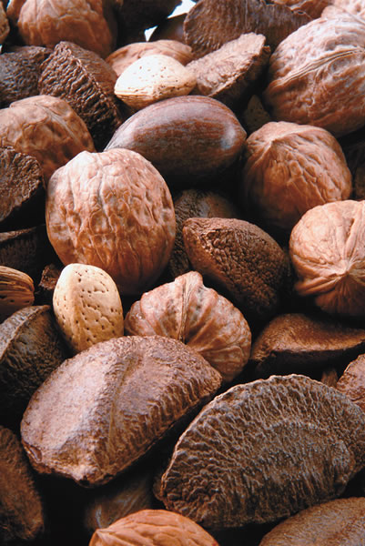

It’s never too early to develop the healthy habits that can prevent diabetes, a disease that is all too common in the United States. According to the American Diabetes Association (ADA), 18.2 million Americans are diabetic, and another 16 million have pre-diabetes-elevated blood glucose levels that indicate they are developing the disease. In fact, a child born in the United States today has a one-in-three chance of developing diabetes during his or her lifetime, according to a 2003 report in the Journal of the American Medical Association.
The good news is that many factors that can reduce the risk of diabetes are within our control. A healthy diet and regular exercise will help prevent diabetes. For those already diagnosed as diabetic, these healthy habits can help reduce symptoms, and a number of herbs and supplements are worth exploring, as well.
Awareness of this disease dates back to the first century or earlier, but only within the last 100 years have scientists been able to pin the problem on insulin, a hormone that is produced by the pancreas.
Insulin ushers glucose from the blood into the body’s tissues. In type 1 diabetes, also called insulin-dependent diabetes, the pancreas doesn’t make enough insulin. This form of diabetes often begins in childhood or adolescence, so it is sometimes referred to as juvenile diabetes.
With type 2, or non-insulin-dependent diabetes, the pancreas produces insulin, but the body’s tissues do not respond to it. Reacting to the high levels of glucose in the blood, the pancreas produces even more insulin.
In both types of diabetes, the tissues are starved because they don’t receive enough glucose, leading to hunger and fatigue. Because the kidneys must excrete the excess glucose in the blood, frequent urination and excessive thirst are early symptoms of diabetes.
Treatment for both forms of diabetes aims at keeping blood glucose within normal limits. People with type 1 diabetes must inject themselves with insulin. Those with type 2 diabetes can often control their blood glucose by following a careful diet, exercising regularly and losing excess weight. In more severe cases, oral medications also are needed.
Diabetes needs to be treated because it decreases life expectancy. It doubles the risk of heart attack and stroke. Diabetes is also a leading cause of blindness, nontraumatic amputations and kidney failure. In the United States, it is the sixth most common cause of death.
Many estimates indicate that nearly one-third of people with diabetes have yet to be diagnosed, often because early symptoms such as fatigue and frequent urination are subtle and may go unnoticed. This stealth disease can sneak up on you, finally declaring itself with its most serious symptoms-a heart attack, for instance. Fortunately, testing for diabetes is relatively simple and inexpensive. Many doctors now order a fasting blood glucose test as part of routine annual exams.
More than 90 percent of people with diabetes have type 2, which is beginning to appear at younger ages. While type 1 diabetes used to be the only form of diabetes prevalent among children, type 2 diabetes now makes up a significant portion of new cases.
The two main factors that cause type 2 diabetes are eating too much - especially too much junk food-and exercising too little. Inactivity, obesity, a high-fat diet and excessive stress all heighten insulin resistance. The main culprit is obesity, which is fueled by the other three factors. In a 2001 Journal of the American Medical Association report investigating the twin epidemics of obesity and diabetes, researchers found that 19.8 percent of American adults were obese, 27 percent didn’t exercise at all, and another 28.2 percent were not regularly active. Only 24.4 percent of adults consumed fruits and vegetables five or more times daily. In addition, the number of children diagnosed as overweight has increased 100 percent in the last 30 years.
The Nurses’ Health Study, which tracked a large group of female nurses for 16 years, attributed unhealthy habits (lousy diet, lack of exercise, smoking) to 91 percent of the cases of diabetes and concluded that “the majority of cases of type 2 diabetes could be prevented by the adoption of a healthier lifestyle.”
People at risk for diabetes can cut their chances of developing the disease by nearly 60 percent by losing just a few pounds, exercising regularly, reducing the fat in their diets and eating more whole grains, fruits and vegetables. In one study of pre-diabetic people, lifestyle modifications (good diet, moderate exercise and weight loss) reduced the risk of diabetes by two-thirds-twice the protection of taking the diabetes drug metformin. For those already taking medication, healthy lifestyle choices can make drugs more effective.
If you have diabetes, keep in mind that if you lower your blood glucose with lifestyle changes, herbs or supplements, you will need to adjust the dosages of your medication. Always discuss any significant changes in your healthcare regimen with your physician.
A healthy diet. Good nutrition is essential for preventing and treating diabetes. Watching how many and what type of carbohydrates you eat is one important way to decrease diabetes risk. Julie Dutton, a registered dietician and certified diabetes educator in Denver, says people should get about 50 percent of their calories from carbohydrates. It’s best to limit simple carbohydrates (candy) and refined carbohydrates (white bread), which make blood sugar rise quickly. The carbs you need are complex carbohydrates found in whole grains, fruits and vegetables, which offer valuable nutrients and fiber.
Fiber increases digestion time, thus slowing glucose absorption from the intestines, and lowers both cholesterol and blood sugar. Furthermore, whole grains help the body become more responsive to insulin. One study found that doubling dietary fiber from the 24 grams a day recommended by the ADA to 48 grams improved glucose control, lowering blood sugar as much as an oral hypoglycemic drug. Participants increased their fiber intake by eating cantaloupe, oranges, sweet potatoes, winter squash, oatmeal and other high-fiber foods.
Dutton recommends 20 to 35 grams of fiber a day. She encourages her patients to choose whole grains - whole-wheat rather than white bread, brown rather than white rice-and experiment with alternative grains such as whole oats, barley and bulgur. Another good source of fiber is beans, which provide about 7 grams of fiber per serving. You should eat at least five servings a day of fruits and vegetables.
Dutton recommends that 20 percent to 30 percent of our daily calories come from protein. She steers patients toward skinless poultry and especially fish, which contains heart-healthy omega-3 fatty acids and is lower in saturated fat than red meat. In a 2004 study published in the Archives of Internal Medicine, women who ate more red meat had a 26 percent greater risk of developing diabetes. The risk increased nearly 50 percent with consumption of processed meats.
Keep your overall fat intake around 30 percent of total calories consumed. Just as with carbs, some fats are good for your health, while others increase the risk of diabetes. Saturated fats, primarily found in animal products, are important to avoid because they decrease insulin sensitivity.
Unsaturated fats are better for your heart and improve control of blood glucose. The best fats to consume are the monounsaturated fats (good sources are olive oil, high-oleic safflower oil, almonds, avocado and peanuts). Polyunsaturated fats (most vegetable oils, nuts, seeds and fish) are a good second choice. Dutton says the key is to make healthy substitutions: avocado on a sandwich instead of mayonnaise, olive oil or canola oil instead of butter in cooking and salad dressings.
A simple strategy is to eat a varied plant-based diet, which provides plenty of fiber and nutrients and eliminates saturated fat. Vegetarian diets also reduce the risk of cardiovascular disease, the most common complication of diabetes. A small pilot study of 11 diabetic patients found that a vegetarian diet was enough to reduce or eliminate the need for medications in most of the participants. Another strategy is to concentrate on a diet of whole foods, including fresh fruits and vegetables; minimally processed grains, nuts, and seeds; low-fat dairy, and lean meats and fish.
Exercise and weight loss. To lose weight, you have to both restrict calories and increase physical activity. That means choosing an exercise program that works for you. Exercise heightens the body’s sensitivity to insulin, improves glucose control and cardiovascular health, battles the dreaded bulge and relieves stress. Compared to “couch potatoes,” physically active people halve their risk of developing type 2 diabetes. You don’t have to run the New York Marathon to stay healthy; even moderate exercise (brisk walking for 30 minutes a day) can help stave off the disease and improve health in diabetics.
Obesity is the biggest risk factor for diabetes, and carrying extra weight also aggravates the disease’s complications. Shedding even a few pounds can reduce the risk of developing diabetes. In people with type 2 diabetes, weight loss reduces insulin resistance, lowers blood levels of glucose, cholesterol and triglycerides (fats found in blood cells), and decreases blood pressure.
Nutritional supplements also can play a role in preventing and treating diabetes. A handful of nutrients have been shown to improve blood-sugar control in diabetics, although so far, no single supplement has yielded conclusive scientific results. The most promising are antioxidant vitamins, magnesium and chromium. High doses of any one vitamin or mineral can upset the balance of other substances in your body, so most nutrition experts recommend formulas with a mixture of antioxidant vitamins, minerals and trace elements. Dutton says that taking a multivitamin can’t hurt, but people should get the majority of their nutrients from food.
Antioxidants such as vitamin C, vitamin E, beta carotene, other carotenoids and selenium help neutralize free radicals-unstable molecules that damage other tissues. Everyone needs antioxidants to reduce this damage, but they are especially important in treating diabetes, which causes accelerated production of free radicals. Research in this area has focused on vitamin E, and most, but not all, of these studies have shown positive results with supplements. Food sources of vitamin E include seeds, nuts, whole grains and polyunsaturated vegetable oils. For other antioxidants, fresh fruits and vegetables provide vitamin C and carotenoids, and selenium is abundant in nuts - especially brazil nuts and walnuts.
Magnesium levels are commonly low in diabetics, and deficiency in this mineral heightens insulin resistance. People with higher dietary intake of magnesium cut their risk of diabetes by a third. However, studies in which people with type 2 diabetes took magnesium supplements have shown mixed results. Good food sources of magnesium are whole grains, legumes, green leafy vegetables, tofu, seeds and nuts.
Chromium is a trace mineral essential for metabolism of glucose and fat. Experiments have shown that chromium deficiency impairs glucose tolerance, a problem that can be reversed by supplements. However, most diabetics in the United States are not low in chromium. Furthermore, in studies of people with pre-diabetes or type 2 diabetes, supplementation of chromium has yielded conflicting results. If you decide to add more chromium to your diet, the best food sources are meats, whole grains and brewer’s yeast.
New research on herbal therapies has found several promising herbs for treating diabetes. Before you add a glucose-lowering herb to your regimen, talk to your healthcare professional, because careful monitoring of your blood glucose levels is critical for diabetes treatment, especially for those taking insulin injections.
Herbs can’t cure diabetes, but like pharmaceuticals, they can help control blood sugar and alleviate some of the symptoms of the disease, says Eric Yarnell, N.D., co-author of Clinical Botanical Medicine and assistant professor in the department of botanical medicine at Bastyr University in Seattle. He says herbs are helpful in the transition period after diagnosis of type 2 diabetes and before improved diet, increased exercise and weight loss have had a chance to be effective. Once lifestyle changes have normalized blood glucose, people often no longer need herbs or drugs.
Yarnell divides the herbs used to counter diabetes into two main categories: those that increase insulin secretion, and those that sensitize cells to insulin’s effects. For type 2 diabetes, he says to avoid using the former, which includes herbs such as gymnema (Gymnema sylvestre). Although preliminary research shows that this herb can raise insulin and lower blood glucose in people with both types of diabetes, people with type 2 diabetes already have elevated insulin levels. “If you raise insulin higher, the cells listen to it less,” Yarnell says.
To control blood glucose, Yarnell prefers herbs that make cells more responsive to insulin, such as ginseng, cinnamon and bitter melon. He blends herbal tinctures-liquid preparations of the medicine-and has his patients take at least 5 milliliters (1 teaspoon) three times a day. Because herbal tinctures are quickly metabolized, frequent dosage is critical.
Plants such as nopal, fenugreek and psyllium are helpful because they contain soluble fiber, which slows intestinal absorption of both glucose and cholesterol. To retain their fiber, you should take these herbs whole or in a powdered form, rather than as extracts.
Ginseng comes from several species, but most of the positive diabetes research has been with American ginseng (Panax quinquefolius). Three small studies in people with type 2 diabetes show that 3 grams a day of the powdered root lowers blood glucose.
Bitter melon (Momordica charantia) is a tropical plant also called balsam pear or karela. Its components appear to be structurally similar to insulin. A few small studies have shown benefits with its juice, fried melon and injectable extracts.
Cinnamon (Cinnamomum verum, aka C. zeylanicum and C. cassia) lowers both glucose and cholesterol. In a recent trial, 60 people with type 2 diabetes were randomly assigned to take either encapsulated cinnamon (1 gram, 3 grams or 6 grams) or placebo capsules for 40 days. By the end of the study, all three doses of cinnamon had lowered glucose, cholesterol and triglyceride levels. No changes occurred in the placebo groups. Cinnamon also is effective at lowering glucose when mixed into food.
Fenugreek (Trigonella foenum-graecum), a plant cultivated in India and the Mediterranean, contains soluble fiber and other beneficial components. Preliminary studies show that the powdered, defatted seeds lower glucose, cholesterol and triglycerides. It can be used to treat both types of diabetes. In one study, type 2 diabetics who added fenugreek to their regimen were able to reduce their medications by 20 percent. Study dosages have ranged from 2.5 milligrams of encapsulated seed powder taken twice a day, to 25 to 100 grams of ground seeds divided into two doses and mixed into food.
Psyllium (Plantago ovata) produces seeds rich in soluble fiber and lowers both glucose and cholesterol levels. Several studies have shown that this plant can be helpful in controlling diabetes. In the most recent study, 20 people with type 2 diabetes took 3.5 grams of psyllium seed four times a day. The result was significantly lowered blood sugar and cholesterol.
Prickly pear cactus or nopal (Opuntia streptacantha) contains the soluble fiber pectin. A few small studies have shown that fresh stems (grilled or broiled) decrease blood glucose.
Ivy gourd (Coccinia indica) grows in India, where it is a traditional treatment for high blood sugar. In two studies in people with type 2 diabetes, leaf preparations lowered glucose. Lin
Linda B. White, M.D., is the co-author of The Herbal Drugstore, and an adjunct faculty member in the Health Professions Department of Metropolitan State College in Denver.Lin LIna
|
GETTY IMAGES A healthy diet is crucial for preventing and controlling diabetes. |
 ISTOCKPHOTO One diet strategy is to get more of the fats in your diet from plant sources, including nuts. |
ISTOCKPHOTO Cinnamon helps bring down blood glucose, whether taken in capsules or mixed into food. |